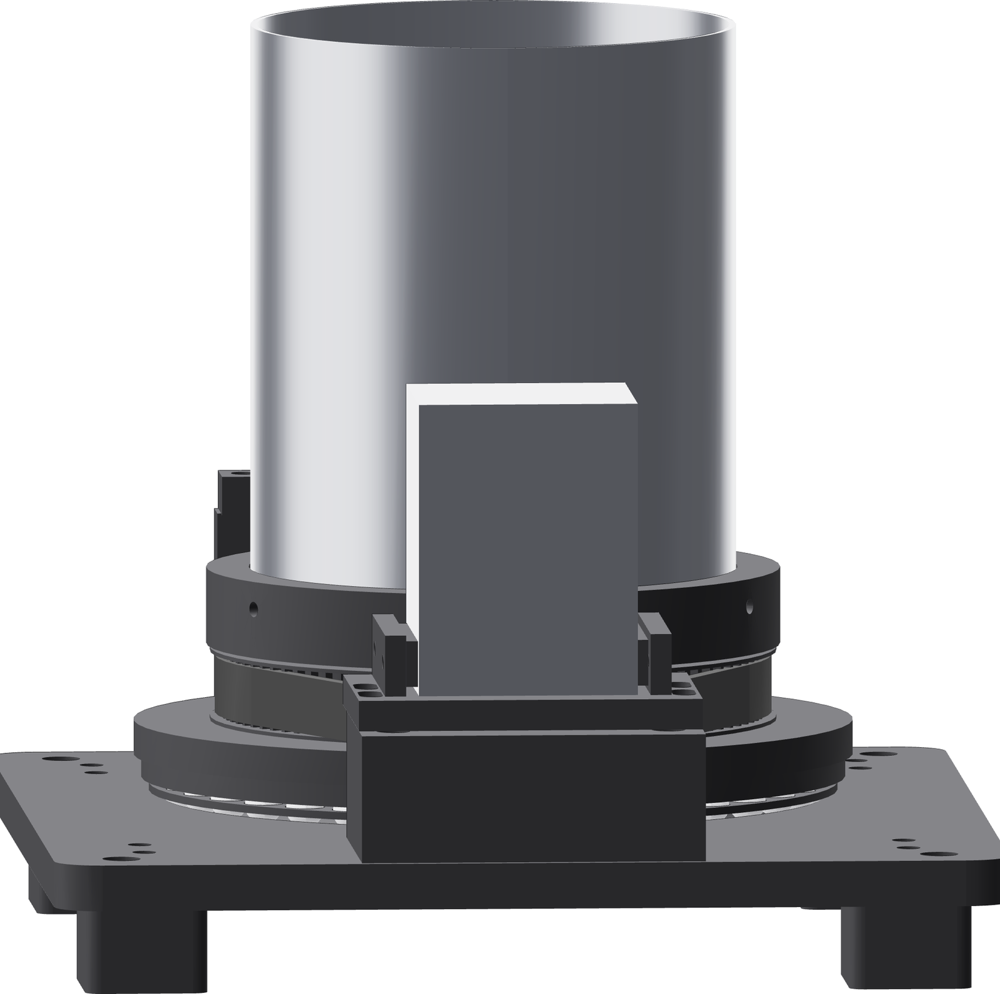

The numbers
Travel speed is the recipe setting; table rpm follows from it. The controller clamps every command into the 5–15 mm/s window — a commissioning range, not a qualified weld schedule.
| Travel | Table | 360° | 380° | Pulses/s |
|---|---|---|---|---|
| 5 mm/s | 0.772 rpm | 77.7 s | 82.0 s | 185.3 |
| 6 mm/s | 0.926 rpm | 64.8 s | 68.4 s | 222.3 |
| 8 mm/s | 1.235 rpm | 48.6 s | 51.3 s | 296.4 |
| 10 mm/s | 1.544 rpm | 38.9 s | 41.0 s | 370.6 |
| 12 mm/s | 1.853 rpm | 32.4 s | 34.2 s | 444.7 |
| 15 mm/s | 2.316 rpm | 25.9 s | 27.3 s | 555.8 |
The joint
| End plate | ID-fit plug, 6.35 mm recess |
| Weld-circle diameter | 123.70 mm |
| One revolution at the bead | 388.61 mm |
| Rotating mass, 1st / 2nd closure | 1.40 / 2.01 kg |
The drive
| Reduction | 4.5:1 — 20T to 90T |
| Driver microstepping | 3,200 pulses/motor rev |
| Table resolution | 14,400 pulses/rev |
| One pulse | 0.025°, or 0.027 mm at the bead |
| Default lap | 15,200 pulses = 380° |
| Motor speed at 8 mm/s | 5.558 rpm |
| Belt centre distance | 125.1 mm nominal |

Start at 8 and change one variable at a time after the first 316L coupon. Coupon evidence sets the production value.